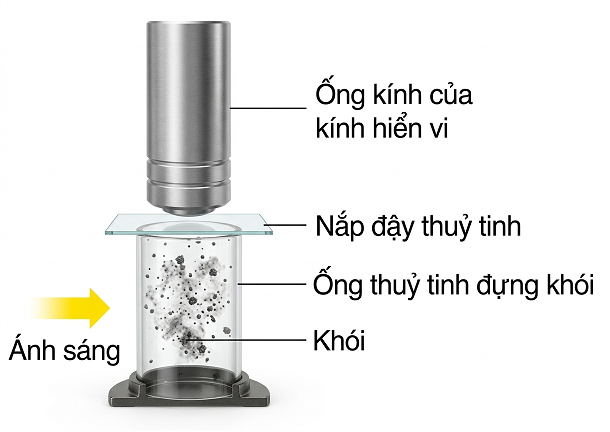
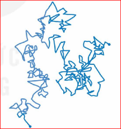

Khi học môn Khoa học tự nhiên ở lớp 6, các em đã biết một số tính chất đặc biệt của chất ở thể khí so với chất ở thể lỏng và thể rắn. Tại sao chất ở thể khí lại có một số tính chất vật lí khác chính chất đó ở các thể khác?
I. CHUYỂN ĐỘNG VÀ TƯƠNG TÁC CỦA CÁC PHÂN TỬ KHÍ
1. Chuyển động Brown trong chất khí
Chuyển động Brown không chỉ xảy ra trong chất lỏng mà xảy ra cả trong chất khí. Dưới đây là sơ đồ thí nghiệm quan sát chuyển động của các hạt khói trong không khí.

Hình 8.1. Sơ đồ thí nghiệm quan sát chuyển động Brown

Hình 8.2. Quỹ đạo chuyển động của hạt khói
Câu hỏi 1: Dựa vào Hình 8.1, hãy mô tả thí nghiệm dùng để quan sát chuyển động Brown trong không khí.
Câu hỏi 2: Hãy dựa vào quỹ đạo chuyển động của hạt khói (Hình 8.2) để chứng tỏ rằng các phân tử không khí chuyển động hỗn loạn, không ngừng.
Câu hỏi 3: Khi quan sát tia nắng mặt trời qua cửa sổ, ta thấy các hạt bụi chuyển động. Chuyển động này có phải là chuyển động Brown không? Tại sao?
Kết luận từ thí nghiệm:
- Chất khí được cấu tạo từ các phân tử chuyển động hỗn loạn, không ngừng.
- Nhiệt độ của khí càng cao thì tốc độ chuyển động hỗn loạn của các phân tử khí càng lớn.
- Các phân tử không ngừng va chạm với nhau và với thành bình làm tốc độ của chúng thay đổi liên tục.
Giải thích khái niệm tốc độ trung bình:
Vì các phân tử có tốc độ khác nhau và thay đổi liên tục do va chạm, ta sử dụng tốc độ trung bình \(\overline{v}\) để mô tả trạng thái của khối khí:
\[ \overline{v} = \frac{v_1 + v_2 + ... + v_n}{n} \]
Ví dụ: Ở điều kiện tiêu chuẩn, phân tử oxygen có tốc độ trung bình khoảng \(400 \, m/s\).
2. Tương tác giữa các phân tử khí
Giữa các phân tử khí cũng có lực đẩy và lực hút (gọi chung là lực liên kết). Tuy nhiên, khoảng cách giữa các phân tử khí rất lớn so với kích thước của chúng, nên lực liên kết này rất yếu so với ở thể lỏng và rắn.
Câu 1: Nêu các hiện tượng thực tế chứng tỏ lực liên kết phân tử khí rất yếu.
Câu 2: Dựa vào khối lượng riêng để chứng tỏ khoảng cách giữa các phân tử khí rất lớn.
II. MÔ HÌNH ĐỘNG HỌC PHÂN TỬ CHẤT KHÍ
- Chất khí được cấu tạo từ các phân tử có kích thước rất nhỏ so với khoảng cách giữa chúng.
- Các phân tử khí chuyển động hỗn loạn, không ngừng. Chuyển động này càng nhanh thì nhiệt độ của khí càng cao.
- Khi chuyển động hỗn loạn, các phân tử khí va chạm với nhau và với thành bình. Khi va chạm với thành bình, các phân tử khí tác dụng lực, gây áp suất lên thành bình.
Thảo luận: Hãy hoàn thành bảng cơ sở thực tế của mô hình:
| STT | Mô hình động học phân tử chất khí | Các thí nghiệm và hiện tượng thực tế |
|---|---|---|
| 1 | Phân tử khí chuyển động hỗn loạn, không ngừng. | Chuyển động Brown trong không khí. |
| 2 | Kích thước phân tử khí rất nhỏ so với khoảng cách giữa chúng. |
Khối lượng riêng của chất khí rất nhỏ so với chất lỏng/rắn; tính dễ nén của chất khí.
|
| 3 | Khi chuyển động các phân tử va chạm với nhau và với thành bình. |
Chất khí gây áp suất lên thành bình (bơm căng lốp xe, bóng bay).
|
III. KHÍ LÝ TƯỞNG
Khí lí tưởng là một mô hình đơn giản hóa để nghiên cứu chất khí, dựa trên các đặc điểm:
- Các phân tử khí được coi là các chất điểm (có khối lượng nhưng thể tích không đáng kể).
- Không tương tác với nhau khi chưa va chạm (lực liên kết coi bằng 0).
- Các va chạm giữa các phân tử và với thành bình là va chạm hoàn toàn đàn hồi.
Thảo luận: Hãy dùng mô hình động học phân tử chất khí để chứng tỏ với một khối lượng khí xác định, nếu giảm thể tích bình và giữ nguyên nhiệt độ thì áp suất tăng.
Ví dụ: Dùng tay nén pittông của ống tiêm (bịt đầu), ta thấy càng nén thể tích càng nhỏ thì tay càng cảm nhận lực đẩy ngược lại mạnh hơn.
IV. CỦNG CỐ
EM ĐÃ HỌC
- Cấu tạo chất khí từ các phân tử nhỏ, cách xa nhau.
- Chuyển động hỗn loạn tỷ lệ thuận với nhiệt độ.
- Va chạm gây ra áp suất.
EM CÓ THỂ
Giải thích các hiện tượng thực tế: tại sao khí chiếm hết bình, tại sao lốp xe căng, sự thay đổi áp suất theo nhiệt độ và thể tích...
BÀI TẬP TRẮC NGHIỆM CỦNG CỐ
Câu 1: Chuyển động Brown của các hạt khói trong không khí chứng tỏ điều gì?
Câu 2: Khi nhiệt độ của khối khí tăng lên thì:
Câu 3: Áp suất của chất khí lên thành bình được gây ra bởi:
Câu 4: Đặc điểm nào sau đây KHÔNG phải của khí lí tưởng?
Câu 5: Công thức tính tốc độ trung bình của n phân tử khí là: